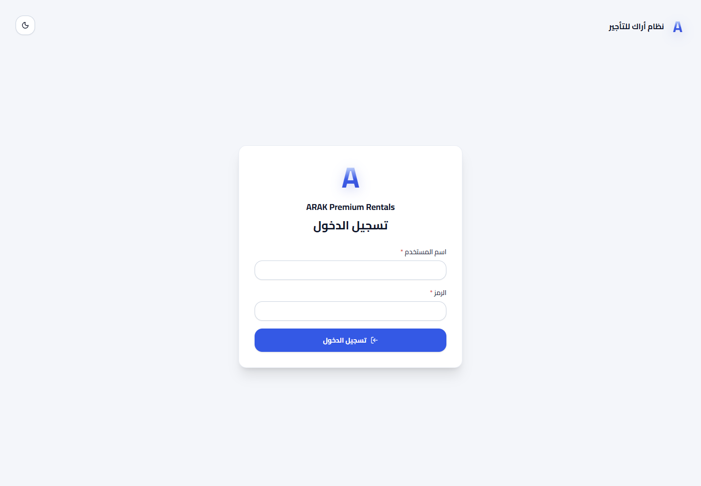
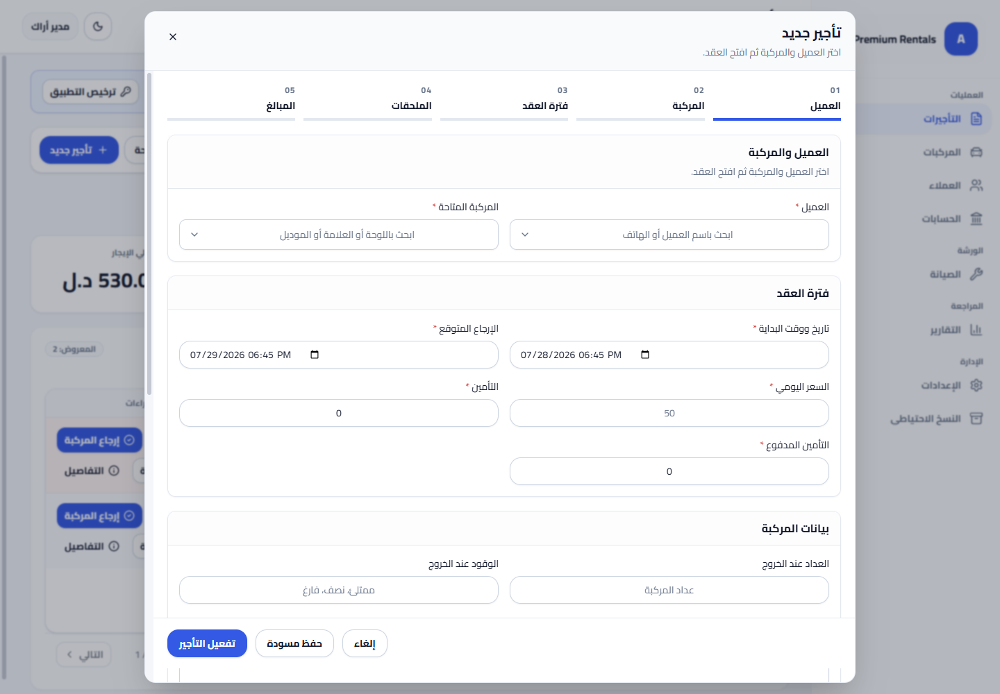
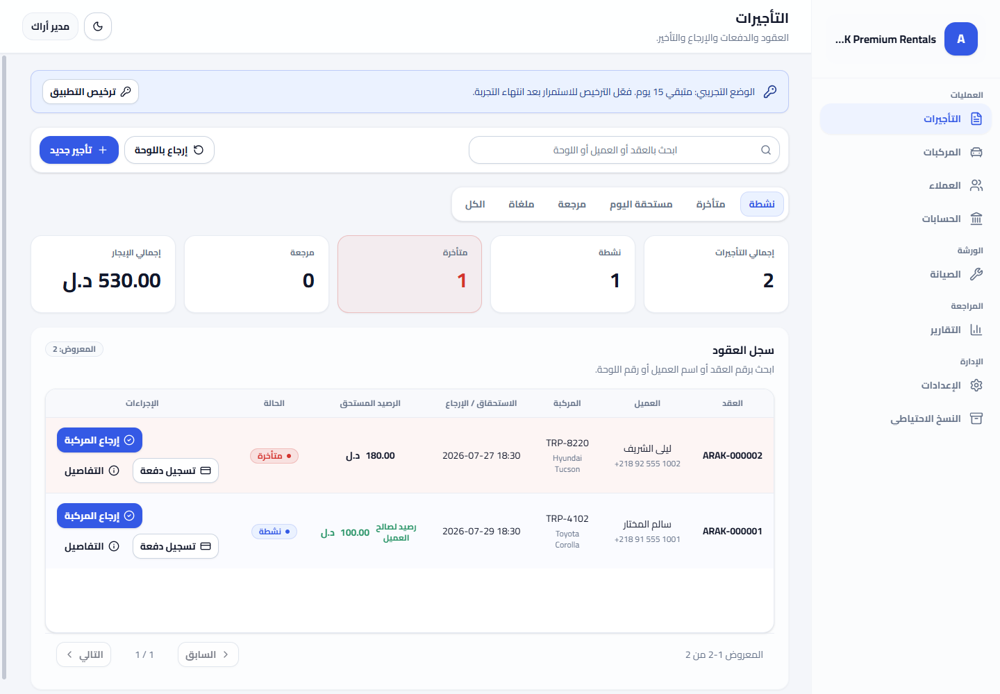
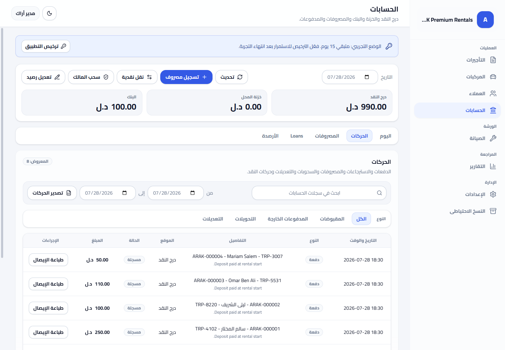
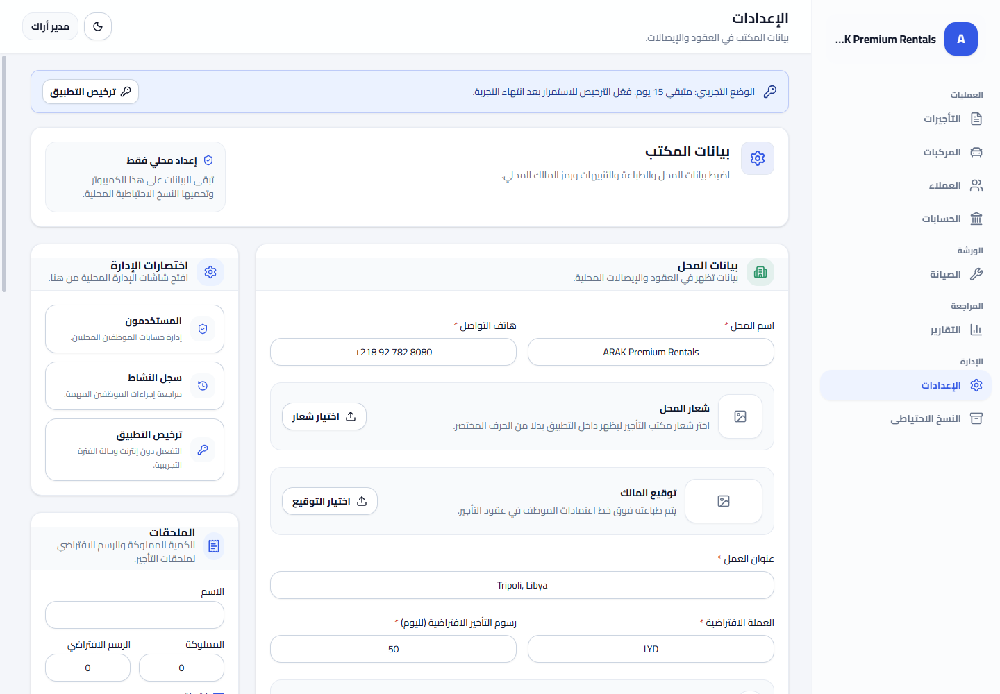

ARAK
دليل التشغيل الكامل وسيناريوهات العمل
دليل الاستخدام التطبيقي الشامل لمكاتب تأجير السيارات والدراجات النارية
تطبيق مكتب أراك للتأجير v0.1.0
المرحلة 1: الافتتاح الصباحي وتسجيل الدخول
المرحلة 2: إضافة مركبة جديدة وتسجيل عميل
المرحلة 3: إنشاء عقد تأجير جديد (5 خطوات)
المرحلة 4: طباعة العقود والإيصالات المعتمدة
المرحلة 5: إرجاع المركبة وسداد المتبقي والأمانات
المرحلة 6: تحويل المركبات للورشة والصيانة
المرحلة 7: إدارة درج النقدية والمصروفات
المرحلة 8: إغلاق اليوم والنسخ الاحتياطي
المرحلة 1: الافتتاح الصباحي وتسجيل الدخول
- افتح التطبيق: اضغط على أيقونة التطبيق على سطح المكتب.
- اختر الحساب: اختر اسمك (مثال: موظف الاستقبال أو مدير المكتب).
- أدخل رمز PIN: أدخل رمز الدخول المكون من 4 أرقام لتأكيد صلاحياتك.
- مراجعة رصيد النقدية: توجه لتبويب (الحسابات) للتأكد من رصيد درج النقدية الافتتاحي.

شاشه الدخول السريعة باستخدام رمز PIN المحدد لكل موظف
المرحلة 2: سيناريو إنشاء عقد تأجير جديد (5 خطوات)
عند وصول عميل للمكتب يرغب في تأجير سيارة أو دراجة نارية، اتبع الخوات التالية:

نافذة إنشاء عقد التأجير المكونة من 5 خطوات واضحة
- الخطوة 01 (العميل): ابحث عن العميل بالاسم أو رقم الهاتف، أو اضغط إضافة عميل جديد.
- الخطوة 02 (المركبة): اختر المركبة المتاحة حالياً من القائمة (مثال: Toyota Corolla - TRP-4102).
- الخطوة 03 (فترة العقد): حدد تاريخ ووقت البداية وتاريخ الإرجاع المتوقع والسعر اليومي (مثال: 3 أيام بسعر 85 د.ل = 255 د.ل).
- الخطوة 04 (الملحقات والأمانات): أضف أي خوذات أو ملحقات، وسجل الأمانات المحتجزة (مثال: جواز سفر رقم PASS-887766).
- الخطوة 05 (التأمين والدفع): أدخل المبلغ المدفوع مسبقاً وعداد المسافة وقراءة الوقود، ثم اضغط (تفعيل التأجير).
المرحلة 3: سيناريو إرجاع المركبة وتسديد الحساب
عند عودة العميل لإرجاع المركبة إلى المكتب:

متابعة العقود والبحث السريع بزر (إرجاع باللوحة)
- البحث السريع: اضغط زر (إرجاع باللوحة) وادخل رقم لوحة المركبة.
- فحص المركبة: ادخل قراءة عداد المسافة الحالي ومستوى الوقود وتقرير أي أضرار.
- تصفية الحساب: يحسب التطبيق تلقائياً أي ساعات تأخير أو رسوم إضافية، ويخصم التأمين المدفوع.
- تسليم الأمانة: قم بتغيير حالة الأمانة (جواز السفر) إلى (مستردة للعميل).
- إنهاء العقد: اضغط (إرجاع المركبة وتأكيد الدفع) لتتحول حالة المركبة فوراً إلى (متاحة).
المرحلة 4: إدارة درج النقدية والمصروفات (Accounting)
ضبط حركة الأموال والمصروفات والمبالغ المحولة للخزنة أو البنك:

إدارة النقدية في الدرج والخزنة وتسجيل المصروفات وبطاقات الأرصدة
- تسجيل مصروف: اضغط (+ تسجيل مصروف) لإدخال مصاريف المحل اليومية (غسيل، وقود، صيانة).
- تحويل الأموال: اضغط (نقل نقدية) لنقل المبالغ الزائدة من درج النقدية إلى خزنة المحل.
- إغلاق اليوم: في نهاية الدوام، اضغط (إغلاق اليوم) وقم بعد النقدية الفعلية لتثبيت المطابقة.
المرحلة 5: إعدادات الشعار والتوقيع والنسخ الاحتياطي

تخصيص بيانات المكتب وشعار المحل وتوقيع المالك للطباعة
- الشعار والتوقيع: ارفع شعار المحل وتوقيع المالك ليتم تضمينهما تلقائياً في العقود المطبوعة.
- النسخ الاحتياطي: من تبويب النسخ الاحتياطي، اضغط (إنشاء نسخة احتياطية) للحصول على ملف مضغوط يحفظ جميع العقود والبيانات.
✅ ملخص التشغيل: التزم بتسجيل كافة العقود والدفعات أولاً بأول للحفاظ على مطابقة دقيقة لدرج النقدية وأسطول المركبات.